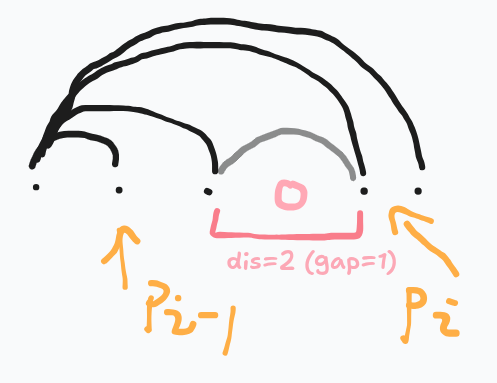

原题链接
小 A 有一个正 (n) 边形蛋糕，顶点编号 (1) 到 (n)。她已选 ( x ) 个顶点，可以在选中的顶点之间画对角线。对角线不能相交（可以共享端点）。她可以再选不超过 ( y ) 个顶点，目标是形成尽可能多的不相交的三角形蛋糕块（由多边形的边和对角线构成）。求最大三角形数量。
多测， 4≤n≤109,2≤x≤min(n,2⋅105),0≤y≤n−x。∑x≤2⋅105。
考虑将已选择的点拆为链。直接存贮点的位置的数组。
则原问题转换为：给你 n 个点，在一条直线上。你可以任意连接两个点作为“桥”，但不能与之前的桥相交（两个桥共享一个点的情况是合法的）。
假定这些点按照 ai=i 的方式排布，按照 {1,i∈[3,n]} 的方式连接，最大能产生 n−2 的贡献。容易发现不可能比这更多了。
那么如果这些点不连续，考虑所有点都往点1连接。然后连接空格间的点。

令每一个连续的块为 pj，块中最左边叫 pj,0，最右边叫 pj,1。
连接空格间的点（即连接 (pj−1,1,pj,0)）的目的是为了使得 (1,pj,0) 这一条链生效。
如果相距为 2，那么 (pj−1,1,pj,0) 也可以产生贡献。
如果将链重新连为环，我们可以发现：
不考虑非法情况，如果 i=pj,0 且 pj,0=pj−1,1+2，那么这个点的贡献为 2，否则为 1。
容易发现这是对的：
-
当 i=pj,0 且 pj,0−pj−1,1>2 时，光是 (pj−1,1,pj,0) 是不会产生贡献的，并且中间也没有点给你贡献。而由于 (1,pj−1,1) 之间有连接，就有 (1,pj−1,1,pj,0) 的三角形。所以说贡献体现在 (1,i) 那里。
-
当 i=pj,0 且 pj,0=pj−1,1+2，很显然就要把 (pj−1,1,pj,0) 考虑到了。
回过头来，再将非法情况完善。
按照这样，点 1 前面就会有 一条连接 pk,1 的边 和 一个自环。这两个边都是不需要的。pk,1 已经与 1 连接了。（什么你跟我说 1 和 pk,1 贴在一起？我让他偏移一下不就好了。实在偏移不了直接特判）
再考虑与 1 过近（或算重）的情况。
那么我们就得到了已选择的点的计算方式：
1
2
3
4
5
6
7
8
9
10
11
12
13
14
15
16
17
18
| void calc_orians(){
if(n==x){
ans=x-3;
return;
}
int st;
for(int i=1;i<=n;++i) if(a[i]%x!=(a[pre(i)]+1)%x){st=i;break;}
for(int i=st;;){
int j=pre(i);
if(a[i]%x==(a[j]+2)%x) ans+=2;
else ++ans;
i=i%n+1;
if(i==st) break;
}
ans-=2+1;
}
|
好了现在如果我要往空隙之间插入点那怎么办：
因为与上一个点的距离为 2 时贡献为 2 ，所以使用 010101 的方式插入。
考虑分类讨论最后一个点的情况：
-
当 gap 为偶数时，，容易发现并没有产生更多的贡献。
-
当 gap 为奇数时， ，橙色线部分是新的贡献。
，橙色线部分是新的贡献。
也就是说，选 奇数gap 到最后一个的贡献是 3。
那么肯定优先处理短的 奇数gap。
然后就做完了。
1
2
3
4
5
6
7
8
9
10
11
12
13
14
15
16
17
18
19
20
21
22
23
24
25
26
27
28
29
30
31
32
33
34
35
36
37
38
39
40
41
42
43
44
45
46
47
48
49
50
51
52
53
54
55
56
57
| inline int pre(int p){return ((p-1==0)?(n):(p-1));}
ll ans;
void calc_orians(){
if(n==x){
ans=x-3;
return;
}
int st;
for(int i=1;i<=n;++i) if(a[i]%x!=(a[pre(i)]+1)%x){st=i;break;}
for(int i=st;;){
int j=pre(i);
if(a[i]%x==(a[j]+2)%x) ans+=2;
else ++ans;
i=i%n+1;
if(i==st) break;
}
ans-=3;
}
ll cnteven;
vector<ll> lenodd;
void calc_add(){
for(int i=1;i<=n;++i){
int j=pre(i);
ll gap=((a[i]%x)+x-(a[j]%x))%x-1;
if(gap<=1) continue;
if(gap%2==1){
lenodd.emplace_back(gap/2);
}
else cnteven+=(gap/2);
}
}
int main(){
int T=read();
while(T--){
input();
calc_orians();
calc_add();
sort(lenodd.begin(),lenodd.end());
ll add=0;
for(auto len: lenodd){
if(m>=len) add+=(len-1)*2+3,m-=len;
else add+=m*2,m=0;
}
if(m) add+=min(cnteven,m)*2;
printf("%lld\n",ans+add+1);
ans=cnteven=0;
lenodd.clear();
}
return 0;
}
|
submission
啊呀把 source 文件夹删了，骇死我力